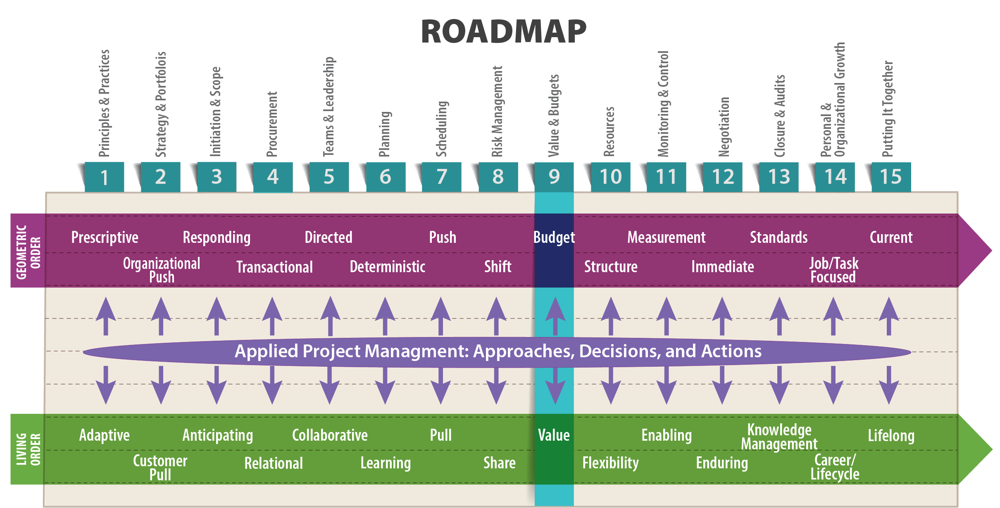
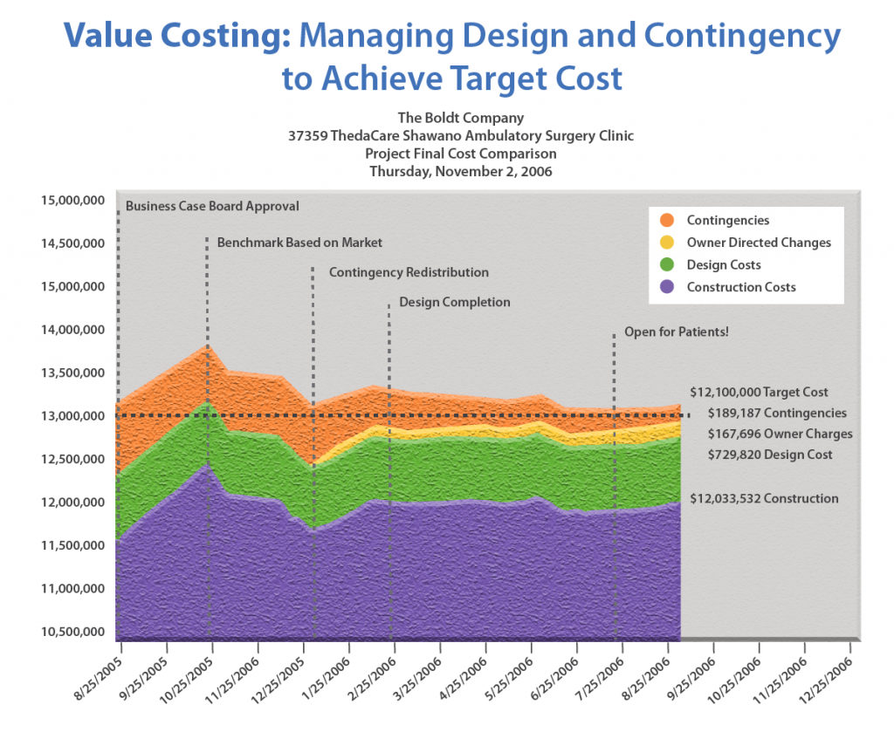

As obvious as it seems, customer value is defined by no one but the customer.
— Mark Rosenthal (2009)

Objectives
After reading this lesson, you will be able to
The Big Ideas in this Lesson
Nearly all projects require money to pay for the required resources—labor, services, and supplies. Project success requires that project managers accurately identify the money needed for a project, acquire the commitment of those funds through a budgeting process, and then successfully manage the expenditure of those funds to achieve the desired outcomes. Your ability to manage stakeholder expectations and commitment related to project funds, combined with your ability to effectively manage the use of those funds to deliver results, will form the basis of your reputation as a reliable project manager.
An important step in ensuring that a project unfolds smoothly is to make sure everyone is using similar terminology. Terminology is important in any technical endeavor, but when it comes to a project’s overall value, miscommunications resulting from incorrectly used terms can result in misaligned expectations and erode trust among project participants. Unfortunately, this type of miscommunication is extremely common. So, let’s start with some basic terms:
The following scenario illustrates use of these related concepts. Suppose you set $100 as your monthly gas budget at the beginning of the year. However, because the current price of gas is $5.50 a gallon, which is higher than normal, you estimate that you will actually spend $130 on gas this month. You won’t know your cost for gas until you make your final purchase of the month and add up all the money you spent on fuel. If you wind up having to take an unexpected out-of-town trip, then your cost could be quite a bit higher than your estimate. Or, if the price of gas drops suddenly, say to $1.60 per gallon, your cost will turn out to be lower. In any case, the cost is a simple summation you can do looking backwards. But the value of your month of travel is something only you can define. If your unexpected out-of-town trip results in some compelling new business opportunities, then you would likely value the trip very highly. But if the weather prevents you from reaching your destination, and then you get lost on the way home, you would probably assign a low value, as experienced, to your misbegotten adventure. Much like in a project, the delivered value may fall short of the target value.
In the real world, these terms do not always mean the same thing to everyone. Worse, people sometimes use them interchangeably or use them to mean different things in different situations. In particular, the terms budget and estimate are often incorrectly used as synonyms, as are the terms cost and price. The end result of this confusion can be a lack of clarity among project partners regarding project goals and constraints. It helps to keep in mind that a budget, an estimate, a target value, and a price are tools to help guide the project team, whereas cost and delivered value are project outcomes that help determine project success. Budgeting and estimating are tools we use to try gauge cost and create value. But they don’t cause cost. Project cost is driven by scope, required resources to accomplish the scope, and related prices.
Delivering value is your primary job as a project manager. But of all the terms related to budgeting a project, the meaning of “value” can be most difficult to grasp. The important thing to remember is that value is determined by the customer, and then flows back to all participants, shaping all project activities. As a project manager, you need to engage with the customer to identify the project’s real value. At the same time, you might also need to take a longer view of value. For example, your organization might be better able to offer value to future customers by carefully studying all projects at completion to capture lessons learned—information that can then be used to improve future projects. The value of this investment of resources may not be apparent to customers, who are only focused on their particular projects, as it mainly benefits future projects. But the overall process benefits all customers in the long run.
As you work on the project’s budget, and perhaps face difficult decisions, you need to focus on tasks that create value. According to the Lean Lexicon, a good test for identifying a value-creating task “is to ask if this task could be left out without affecting the product. For example, rework and queue time are unlikely to be judged of any value by customers, while actual design and fabrication steps are” (Lean Enterprise Institute 2014). This article walks through an example of a home construction project that could have turned out much better for the home owners—who were forced to live in a trailer with no running water during the project—if the builder had focused on providing “chunks” of immediately usable value, such as a working bathroom (Lloyd 2015): http://project-management.com/understanding-lean-project-management/. As you’ve learned in earlier lessons, that’s exactly what Agile project management does in the world of IT. At the end of each sprint, the customer is in possession of a piece of working software.
Throughout any project, you need to do all you can to get stakeholders to focus on the success of the whole project, and not just their individual parts. One way to do this is to make sure everyone understands what the project value is, and then encourage them to optimize the flow of the project. As the project evolves, the project team should continue to refine its understanding of project value; refine its estimate of required resources; and, if necessary, modify the approved budget or adjust scope so that costs do not exceed the budget.
In product development, it is helpful to think of value as an attribute or feature for which customers will pay a premium. Customers may pay more for smaller size, longer life, better aesthetics, or more durable products. Depending on the use of the product being created, these may be more or less important. Susan Ottmann, program director for Engineering Professional Development at the University of Wisconsin-Madison, points out that “Schneider Electric produces two types of load centers for the U.S. market. (A load center is the box in your home that houses circuit breakers.) The QO brand is differentiated from the Homeline brand by a higher level of durability and quality. Although both perform the same function, the technology inside the breakers is slightly different. Presumably, QO has made the calculation that some customers will be willing to pay more for a higher quality product” (pers. comm., June 6, 2018).
A project’s budget, estimate, and cost are all affected by the project’s scope. Anyone who has ever remodeled a bathroom in an old house is familiar with the way scope can change throughout the course of a project. The fact is, you can’t really know how much the project is going to cost until you tear up the floor and get a look at the state of the old plumbing. Boston’s Big Dig—which was estimated to cost $2.8 billion, but ultimately cost $14.6 billion—is a more extreme example of the same principle at work: It is difficult to precisely predict the cost of any endeavor at its outset.
A good rule of thumb is to assume that whatever can go wrong probably will go wrong. For example, to return to the remodeling example—rather than naively hoping for the best, you’d be wise to assume that everything old will have to be replaced when you begin pulling up the floor in a fifty-year-old bathroom. Overly optimistic assumptions about risk and scope are a leading cause of unrealistic estimates. Assuming everything will have to be replaced would help set an estimate for the upper bound of a likely range of costs for the project. Estimates should include a range, which can be narrowed as more is learned about actual project conditions.
Examples of cost and time overruns are easy to find. Here are just a few sources to give you a sense of the magnitude of the problem, which is especially acute in massive megaprojects:
When asked to defend mounting costs, project managers will sometimes argue that the cost increased because the scope evolved, when in fact the real culprit is scope creep. As discussed in Lesson 4, scope evolution, or managed change, is a natural and rational result of the kind of learning that goes on throughout the course of a project. It is a conscious, managed choice caused by externalities that forces you to reconsider project essentials in order to achieve the intended project value.
Scope creep, by contrast, is caused by unmanaged changes to the project scope. It might add value from the customer’s perspective, but the time, money, and resources consumed by the change of scope lead to additional overruns. Scope creep tends to happen when no one is paying attention to the project’s scope.
The key to managing scope changes is a process for early identification, review, and approval of requested changes to project scope. A Scope Change Request—or a Project Variation Request (PVR) as it is sometimes called— is a form that must be signed by all affected stakeholders prior to implementation. This article by Tom Mochal provides some helpful guidelines for managing scope changes: http://www.techrepublic.com/article/follow-this-simple-scope-change-management-process/. You can download a sample change request form here: “Change Request Form“.
Budgeting is an exercise in refining your focus. You start with a wide-angle estimate, in which the details are necessarily fuzzy, and bit by bit zero in on a sharper picture of project costs. You might be temperamentally inclined to try to nail down every figure in an early draft of a budget, but in fact you should only develop a budget at the precision needed for current decisions. Your overall precision can and should advance as the project advances.
This is especially important in the earliest stages of the budgeting process, when you are working out rough estimates. Take care to estimate at the appropriate level of precision: Don’t make the mistake of thinking you can estimate costs to the exact penny or dollar. $378,333.27 is not a realistic or intelligent estimate. Ultimately, overly precise budgets represent a communication failure. By proposing a budget to the customer that contains overly precise figures, you risk giving a false sense of accuracy regarding your understanding of and knowledge about the project.
In the early stages of the budgeting process, when you are still working out estimates, it’s helpful to include an uncertainty percentage. A typical approach is to include a +/- percentage, such as $400,000 +/- 10%. The percentage may initially be large but should gradually decrease as the project progresses and the level of uncertainty declines. For IT projects, which are notoriously difficult to estimate, consider going a step further and adding an uncertainty percentage to every line item. Some items, such as hardware, might be easy to estimate. But other items, such as labor to create new technology, can be extremely difficult to estimate. These line item variances can influence the total estimate variance by a significant amount in many projects.
But even when you have a final budget in hand, you need to prepare for uncertainty by including an official contingency fund, which is a percentage of the budget set aside for unforeseen costs. Contingency funds are described in more detail later in this lesson.
Successful project managers use the budgeting process as a way to create stakeholder buy-in regarding the use of available resources to achieve the intended outcome. By being as transparent as possible about costs and resource availability, you’ll help build trust among stakeholders. By taking care to use the right kinds of contracts—for example, contracts that don’t penalize stakeholders for escalating prices caused by a changing economy—you can create incentives that keep all stakeholders focused on delivering the project value, rather than merely trying to protect their own interests. The relationship between costs and contracts is discussed in more detail later in this lesson.
This blog post by Tim Clark includes some helpful tips on creating a project budget: https://www.liquidplanner.com/blog/7-ways-create-budget-project/.
Ultimately cost, the number management typically cares about most in a for-profit organization, is determined by price. For many projects, it’s impossible to know the exact cost of an endeavor until it is completed. Stakeholders can agree on an intended value of a project at the beginning, and that value has an expected cost associated with it. But you may not be able to pin down the cost more precisely until you’ve done some work on the project and learned more about it.
To estimate and manage costs effectively, you need to understand the different types of costs:
The type of contract governing your project can affect your consideration of costs. As explained in Lesson 4, the two main types of contracts are fixed-price and cost-plus. Fixed price is the more predictable of the two with respect to final cost, which can make such contracts appealing to the issuing party. But “this predictability may come with a price. The seller may realize the risk that he is taking by fixing a price and so will charge more than he would for a fluid price, or a price that he could negotiate with the seller on a regular basis to account for the greater risk the seller is taking” (Symes 2018).
Many contracts include both fixed-price and cost-plus features. For example, they might have a fixed price element for those parts of the contract that have low variability and are under the direct control of the project team (e.g., direct labor) but have variable cost elements for those aspects that have a high degree of uncertainty or are outside the direct control of the project team (e.g., fuel costs or market driven consumables).
If money is not available from other sources, then cost overruns typically result in a change in the project’s scope or a reduction in overall quality. To prevent this, organizations build contingency funds into their budgets. Technically, a contingency fund is a financial reserve that is allocated for identified risks that are accepted and for which contingent or mitigating responses are developed. The exact amount of a contingency fund will vary, depending on project risks; a typical contingency fund is 10% to 15% of the total budget but depends on the risks associated with the project.
John Nelson summarizes his thoughts on cost planning, based on his decades of work on capital projects, as follows:
Conceptual planning takes place in living order. Cost management, when done right, starts out in living order, but moves into a very strict geometric order. Unfortunately, it is rarely done right. Between 2/3 and 3/4 of all projects worldwide end up costing more than originally planned. Getting the costs wrong during the planning stage can result in huge consequences for a project, and possibly for your career. Major cost busts can follow you around for the rest of your working life. If you cost something incorrectly, you’ll have to make corresponding downgrades in scope and quality. For example, many college campuses have new buildings with two or three empty floors because the money ran out before they could be finished. You really don’t want to be the project manager responsible for a costing error of that magnitude, which is sometimes referred to as a CLM, or career limiting move.
Even worse, companies that get costs wrong and underbid a project sometimes try to salvage a profit by illegal means—perhaps by using cheap materials or cutting corners on safety. On public projects, such as highways or schools, huge costing errors can result in loss of public trust, making it more difficult for the public agency to do more work in the future. In that case, a cost bust can be an OLM—an organizational limiting move.
Accurately and precisely predicting the cost of a project is very difficult. You need to start with humility and curiosity, expending a great deal of effort to get the numbers right, especially when it comes to parts of the project you don’t understand. This is true for small projects, like a bathroom renovation in an old house, where you simply don’t know what you’re going to find until you start opening up the walls. It’s also proven true for huge undertakings like the Big Dig, Boston’s tunnel megaproject, which ended up with a cost overrun of 190%. (2017)
Contingency funds are often available to pay for an agreed-upon scope change. However, some project managers make a practice of treating a contingency fund as a “Get Out of Jail Free” card that they can use to escape any cost limitations. Some, as a practical matter, will artificially inflate a contingency fund to ensure that they have plenty of resources to draw to manage any unforeseen future risks. But that is never a good idea because if you wind up with a large contingency fund that you ultimately don’t spend, you have essentially held that money hostage (i.e., lost opportunity costs) from the rest of the enterprise. That can be as damaging to your organization’s mission as a cost overrun that prevents you from finishing a project.
As explained in Lesson 8, contingency funds are a form of risk management. They are a necessary tool for dealing with uncertainty. Unfortunately, as necessary as they are, it’s not always possible to build them into your approved budget. For example, if you are competitively bidding on a contract that will be awarded on the lowest cost, then including a contingency fund in your estimate will almost certainly guarantee that your company won’t win the contract. It is simply not practical to include a contingency fund in a lump sum contract.
In the living order approach to this problem, the owner maintains a shared contingency fund instead and makes it available, upon justification, for all project stakeholders. This approach helps ensure that project participants will work collaboratively with the project sponsor to solve any problems they might notice, confident that there is money available to address problems that threaten project value or to leverage opportunities that will provide greater project value. For example, in a lecture on Lean and integrated project delivery, David Thomack, a long-time veteran of the construction industry, explained how the Boldt Company and other stakeholders involved in a $2 billion healthcare project protected millions of dollars in contingency funding, which was then ultimately shared among all stakeholders (Thomack 2018). Such shared contingency funds are typically spelled out in the project contract and are an effective tool to manage risk and uncertainty. Although some organizations only manage out-of-pocket project costs, best practice is to manage total cost, including costs associated with staff (engineering, purchasing, testing, etc.) working on the project.
In private enterprise, cost management is directed toward maximizing profit. A private or publicly-traded organization cannot stay in business unless they are profitable. But that doesn’t mean that every project is primarily a profit-maximizing undertaking. Certainly, individual projects (such as developing a new product or completing a design for a client) may have a goal of generating profit. However, some projects (such as deploying an enterprise software system or meeting a regulatory compliance requirement) may not in themselves generate profit, but rather support the broader organization in generating profits. Within governmental and non-profit organizations, projects are not designed to generate profits but might be launched to reduce costs or generate net revenues that can be used to cover other costs within the organization.
As a project manager, you need to understand the financial expectations for your projects. Make sure you know how the financial performance of your project affects the financial performance of the associated project portfolio and the overall organization. This understanding will help you advocate for your proposed project. It will also enable you to better justify changes to the project’s scope and budget, based on the project’s proposed value.
As a general rule, chasing profits at the expense of both your organization’s larger mission and the value your organization wants to offer to customers is not sustainable. A relentless focus on profit alone can wreak havoc on a project as project managers are forced to reduce quality or slow the schedule to meet a carved-in-stone budget that will supposedly ensure profitability. In such situations, however, profitability is nearly always defined in the short-term. A fixation on short-term profits can, paradoxically, lead to spiraling losses in the long term—perhaps because unsatisfied customers take their business elsewhere. Likewise, chasing excessive quality or accelerated schedules can be equally elusive.
Ideally, some kind of financial metric is associated with the success of any project and is spelled out in the contract. A collaborative approach to contracts and procurement helps keep all stakeholders focused on the project’s intended value rather than simply on short-term profits.
Estimating costs accurately is essential to any organization’s success. In fact, in many industries, the knowledge involved in cost estimating is actually a valuable form of intellectual property. The ability to estimate costs is part of a company’s overall competitive advantage and a skill required in most industries. There are two basic types of estimating:
top-down estimates: Estimates that “usually are derived from someone who uses experience and or information to determine the project duration and total cost. However, these estimates are sometimes made by top managers who have very little knowledge of the component activities used to complete the project” (Larson and Gray 2011, 134). A top-down estimator generates an expected total for the entire project and then divides up that total among the various project tasks.
A third type, iterative estimating, combines the best of top-down and bottom-up estimating. Iterative estimating is a process of refining an estimate by taking into account information typically used in a top-down estimate (such as past history of similar projects) and detailed information generated by bottom-up estimating. Iterative estimating takes place in living order and relies on negotiation and coordination among the project stakeholders. It only works if past work is representative of future work, which you can really only determine if you are producing small batches. One type of iterative estimating, phase estimating, is “used when the project is large or lengthy or is developing something new or untried for the organization. In phased estimates, the near-term work is estimated with a high level of accuracy, ±5 – 15%, whereas future work is estimated at a high level with ±35% accuracy” (Goodrich n.d.). As the project advances through major phases, the budget for subsequent phases is intentionally reviewed and refined in light of knowledge gained to date.
According to David Pagenkopf, IT project managers use yet another type of estimating called parametric estimating, which is a way to “use experience from parts of other projects to come up with estimates for work packages that are similar to past work, but not the same.” For example, he explains that “if a ½ ton Ford pick-up gets 20 mpg on the highway then I can estimate that a ½ ton GMC pick-up may get 20 mpg on the highway. That information may be helpful in determining the entire cost of a trip that involves the use of multiple rented trucks. Actual mileage will vary, but without testing the GMC truck and collecting data, I can reasonably estimate mpg for it” (pers. comm. June 1, 2018).
Despite all the effort organizations put into cost management, cost overruns remain a fact of life. For example, in a study of 1,471 IT projects, Flyvbjerg and Budzier found
The average overrun was 27%—but that figure masks a far more alarming one. Graphing the projects’ budget overruns reveals a “fat tail”—a large number of gigantic overages. Fully one in six of the projects we studied…[had] a cost overrun of 200%, on average, and a schedule overrun of almost 70%. This highlights the true pitfall of IT change initiatives: It’s not that they’re particularly prone to high cost overruns on average, as management consultants and academic studies have previously suggested. It’s that an unusually large proportion of them incur massive overages. (2011)
Cost overruns occur for many reasons, including lack of sufficient knowledge about the project, inability to obtain funding for the full scope of the desired work, uncertainty about the feasibility of the project, and conflicting priorities. Using only the traditional, geometric approach to cost management fails to encourage broad on-going stakeholder engagement and collaboration that can prevent these problems. You will get far better results by incorporating the living order principle of target-value design, a cornerstone of Lean project delivery in the construction field which has applications in nearly all areas of project management. A target value is the output stakeholders want the project to generate. Target-value design focuses on creating the best possible target value for the customer without exceeding the project’s target costs. It requires a fundamental shift in thinking from “expected costs” to “target cost.” The target-value design process is collaborative and iterative, typically requiring frequent refinement and conversation among project stakeholders.
For a quick, thirty-second introduction to target-value design, see this video:
In the traditional budget process, the estimate is based on a detailed design and project plan. In target-value design, you start with the intended value of the project, and then design and plan a project that will deliver the intended value for the targeted cost. In other words, the project’s value and associated budget determines the project’s design, and not the other way around. This is nothing new for product development teams, who nearly always have to design their products for particular price points. But the degree of engagement with the customers required in target value design to find out what customers really want is not something most product development teams are used to. In any industry, the goal of target-value design is hitting the sweet spot of what you can get for the right price, schedule, and quality. For example, the whole point of Agile software development is continually refocusing the project in an attempt to achieve the desired target-value.
According to John Nelson, you can’t get the costs right on a project until you understand what the customer values. To do that, you need to understand what value really means:
We make value-based decisions all the time. But different people value different things. For instance, in Wisconsin, you might choose to drive an inexpensive car, so you don’t have to worry about it getting damaged on icy winter roads. A realtor, who has to drive clients around in her car, might choose a more comfortable, expensive vehicle. There’s no right or wrong in these decisions. You’re both right.
Keep in mind that a moral value is different from a project value. Moral values are about right and wrong. Project value is concerned with the worth of something—and the only person who can determine that is the customer. The only time an engineer can object to the customer’s definition of project value is when the customer asks for something that is a threat to human safety or is illegal.
When costing a project, you need to figure out what your customer’s value threshold is. You don’t want to build the best thing ever built if that’s not what they want. So, the first step in the target value process is to get the customer to explain her definition of value. To do that, you need to have open conversations in which you keep asking questions, all the while making it clear you are eager to learn what the customer wants. At this stage, it’s essential to resist the temptation to over-promise what you can deliver. One way to avoid this is to continually engage with the customer about value, budget, and schedule. (2017)
According to John Nelson, in capital projects, a target value cost model is “a framework of estimates and budgets that changes over time” (2017). The process entails “many conversations about price, cost, budget, and estimate, and at the same time discussions with the customer about what they really value.” When done right, it transforms “cost management from a calculation performed in isolation by professional estimators, to a process of ongoing, collaborative learning about the project in which team members and the customers all have a role. It avoids the pitfall of having one person responsible for calculating a total cost, and another person responsible for delivering the project at that number” (2017).
The ultimate goal of target-value design is to reduce the waste and rework that normally arises in the design/estimate/redesign cycle. It necessarily involves cross-functional teams because no one party in isolation has the necessary knowledge to define project value and develop a project plan that most efficiently delivers that value. Target-value design integrates the definition of the project’s product/deliverables with the process used to deliver the project and with the associated project costs.
To help you implement target-value design in your organization, the Lean Construction Institute recommends nine “foundational practices.” These principles apply to all types of projects:
John Nelson’s work on the Discovery Building at the University of Wisconsin-Madison included an interesting example of the kind of value trade-off that occurs in target value design:
It turned out that the owner expected extremely high-quality lighting in the building, which put pressure on the target value for electrical. To that, we said, “Ok, we can increase the target value for electrical, but we can’t increase the project budget. So what system will we offset that with?” In the end, we used a flat slab concrete structure system that allowed us to take four feet out of the height of the building. We also used digital-integrated design, designing the entire building in AutoCAD, working out all the interferences before we went in the field. Taking four feet out of the height of the building allowed the skin price to come down, which offset the cost of the higher quality lighting. This is an example of the kind of give-and-take required to manage costs.
Value is at the heart of target-value design and is ultimately defined by the client. However, as a project manager, it’s sometimes your job to expand the client’s notion of what constitutes a project’s overall value, perhaps by encouraging the client to think about the project’s entire life cycle, from planning, to construction/manufacturing/implementation, to operation and support, and to product or facility retirement/ decommissioning.
So, what does target-value design look like in practice? Appendix A in The Design Manager’s Handbook (which is available online here: http://onlinelibrary.wiley.com/doi/10.1002/9781118486184.app1/pdf) includes some helpful examples (Mossman, Ballard and Pasquire 2013). Figure 9-1, created by The Boldt Company, provides a graphical representation of key milestones in a target-value design project.

This diagram shows that:
Business Dictionary. n.d. “Direct cost.” Business Dictionary. Accessed May 2, 2018. http://www.businessdictionary.com/definition/direct-cost.html.
—. n.d. “Engineering cost estimate.” Business Dictionary. Accessed July 15, 2018. http://www.businessdictionary.com/definition/engineering-cost-estimate.html.
—. n.d. “Price.” BusinessDictionary.com. Accessed July 15, 2018. http://www.businessdictionary.com.
Flyvbjerg, Bent, and Alexander Budzier. 2011. “Why Your IT Project May Be Riskier Than You Think.” Harvard Business Review. https://hbr.org/2011/09/why-your-it-project-may-be-riskier-than-you-think/.
Goodrich, Belinda. n.d. “Budgetary Estimate vs Phased Estimate.” PM Learning Solutions. Accessed May 1, 2018. https://www.pmlearningsolutions.com/blog/budgetary-estimate-versus-phased-estimate-pmp-concept-20.
Investing Answers. n.d. “General and Administrative Expense (G&A).” Investing Answers. Accessed May 1, 2018. http://www.investinganswers.com/financial-dictionary/businesses-corporations/general-and-administrative-expense-ga-6674.
Larson, Erik W., and Clifford F. Gray. 2011. Project Management: The Managerial Process, Sixth Edition. New York: McGraw-Hill Education.
Law, Jonathan, ed. 2016. A Dictionary of Business and Management. Oxford: Oxford University Press. https://books.google.com/books?id=w3owCwAAQBAJ&printsec=frontcover&source=gbs_ge_summary_r&cad=0#v=onepage&q&f=false.
Lean Enterprise Institute. 2014. Lean Lexicon, Fifth Edition. Edited by Chet Marchwinski. Cambridge, MA: Lean Enterprise Institute.
Lloyd, Gary. 2015. “Understanding Lean Project Management.” Project-Management.com. May 7. http://project-management.com/understanding-lean-project-management/.
Macomber, Hal, and John Barberio. 2007. “Target-Value Design: Nine Foundational Practices for Delivering Surprising Client Value.” Lean Construction Institute. http://www.leanconstruction.org/media/docs/3-Target-Value-Design-LPC.pdf.
Mossman, Alan, Glenn Ballard, and Christine Pasquire. 2013. “Appendix A: Lean Project Delivery–Innovation in Integrated Design & Delivery.” In Design Manager’s Handbook, by John Eynon, 165-190. http://onlinelibrary.wiley.com/doi/10.1002/9781118486184.app1/pdf.
Nelson, John. 2017. “Conceptual Planning and Cost Management, Parts 1 and 2.” Lecture for CEE 498, Construction Project Management, University of Wisconsin-Madison. February 1.
Rosenthal, Mark. 2009. “First: Define Value.” The Lean Thinker. August 20. http://theleanthinker.com/2009/08/20/first-define-value/.
Symes, Steven. 2018. “Advantages & Disadvantages of a Fixed-Price Contract.” Chron. April 13. http://smallbusiness.chron.com/advantages-disadvantages-fixedprice-contract-21066.html.
Thomack, David. 2018. “Introduction to Lean and Project Delivery.” Video Lecture for CEE 498: Construction Management. University of Wisconsin-Madison, College of Engineering, April 20.